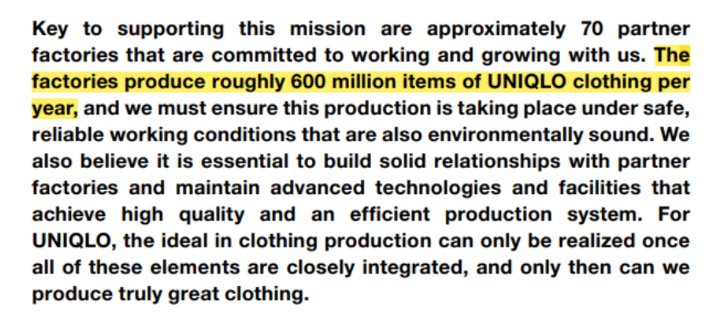

ให้ x แทนจำนวนเสื้อผ้าแบรนด์ Uniqlo ที่หลุด qc ในแต่ละวัน
เนื่องจากเสื้อผ้าแบรนด์ Uniqlo ที่หลุด qc ในแต่ละวันมีจำนวนไม่เท่ากันขึ้นอยู่กับปัจจัยอื่นๆ เช่น ความผิดพลาด
ของเครื่องจักร หรือ คุณภาพของเส้นด้ายที่ใช้ทำเสื้อผ้า เป็นต้น
Range(x) : {0,1 ,2,...,16,000,000}
Range(x) คือจํานวนเสื้อผ้าแบรนด์ Uniqlo
ที่หลุด qc ในแต่ละวัน จากข้อมูลในเว็บ Uniqlo สามํารถผลิตเสื้อผ้าได้เฉลี่ย 600 ล้านชิ้นต่อปีหรือ16ล้านชิ้นต่อวัน

Response RV : จำนวนเสื้อผ้าแบรนด์ Uniqlo ที่หลุด qc
Experimental Unit : จำนวนเสื้อผ้าแบรนด์ Uniqlo ที่หลุด qc ในแต่ละวัน
Factor : ชนิดของผ้า เครื่องจักร สีของผ้า เส้นใยของผ้า
Factor Levels :
1. เครื่องจักรเก่า(ใช้มำเกิน 10ปี), เครื่องจักรที่ยังไม่เก่า(ใช้งานยังไม่ถึง 10 ปี)
2. ผ้าสีอ่อน, ผ้าสีเข้ม
3. ผ้าทอ, ผ้าถัก, ผ้าไม่ถักไม่ทอ หรือผ้านอนวูฟเวน
4. เส้นใยไหม (Silk), เส้นใยลินิน (Linen), เส้นใยฝ้าย (Cotton), เส้นใยขนสัตว์ (Wool), ไนลอน
(Nylon), โพลีเอสเตอร์ (Polyester), เรยอน (Rayon)
Treatment : 84